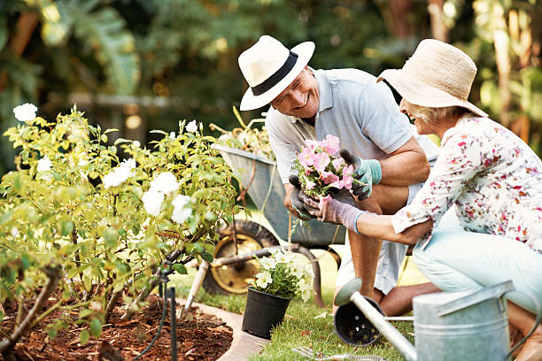

4. Companion Planting
The Old Farmer’s Almanac has practiced Companion Planting for over a century, based on time-honored wisdom. Over time, as we’ve gathered more scientific evidence, we’ve evolved our thinking on the best companion planting combinations.
1. Traditionally, it was thought that vegetables had “friends” and “foes”—companion plants that either benefitted the vegetables’ growth or impeded it. This isn’t necessary wrong, but we’ve found that nearly all the associations are positive ones; there are perhaps 2 or 3 “bad” combinations (e.g., black walnut trees, which secrete growth inhibitors through their roots). Bottom-line: there is simply more evidence for “good” companions than “bad” ones, so we now focus more on why vegetables need friends!
2. There are misconceptions about companion planting on the internet, which we found concerning. Many examples of companion planting were based folklore or hearsay. While observations in our own garden can be valuable, we decided that our reference guide should only highlight companion plant pairings backed up by scientific evidence and tried-and-true practices.
3. While traditionally, companion planting referred to vegetable plant pairs, we’ve added more flowers to our chart; many are excellent natural insect repellents. Nasturtium is heads and shoulders above them all, taking the brunt of pest attacks. (See more below.) Of course, any nectar-rich flowers such as zinnia, comfrey and ageratum will attract pollinators such as bees to the garden, helping to boost the pollination of flowering crop plants like tomatoes, beans, and squash.

Examples of Companion Planting Combinations
Here are examples of some of the best companion planting combinations for your garden. (See more in the chart below.)
- Basil and tomatoes as interplanted basil repels thrips, as mentioned above. Basil also deters the moths which lay tomato hornworms, and egg-laying by armyworms. Basil also attracts bees, which improves pollination, tomato health, and flavor.
- Dillattracts ladybugs, which eat small garden pests such as aphids and spider mites.
- Borage pairs well with tomatoes, attracting pollinating bees. Borage also pairs well with strawberries, enhancing their flavor and vigor.
- Garlic and garlic spray has a strong scent deters many insects. Aphids can’t stand garlic! Garlic also repels onion flies, ermine moths, and Japanese beetles. Plant garlic between rows of potatoes as well as alongside lettuces and cabbages and near fruit trees, together with alyssum to attract aphid-eating hoverflies.
- Mint deters aphids, ants, and flea beetles. Just be careful to plant mint nearby in its own pot or bed, as it is a very aggressive grower!
- Nasturtiums attract hungry caterpillars away from brassicas like cabbage and broccoli and kale, so grow these pretty flowers close to those crops; nasturtium also lure blackfly away from fava beans.
- Parsley attracts beneficial insects to protect and pollinate tomatoes. Plant these herbs between tomatoes.
- Poached egg plants (a wildflower) draws in hoverflies, which control aphids on nearby lettuce.
- Sage is a useful herb that repels carrot fly. Also plant it around a cabbage patch to reduce injury from cabbage moths.
- Sunflowers pair well with cucumbers and pole beans: Sunflowers help provide support for climbing plants, as well as shade for crops which, in hotter climates, can become sun-stressed.
- Tansy is a real draw to pest-eating bugs such as ladybugs or ladybirds, and predatory wasps. At the same time, tansy repels many of the common baddies such as cutworm which attacks asparagus, bean, cabbage, carrot, celery, corn, lettuce, pea, pepper, potato, and tomato plants. Tansy is a perennial, which means you only have to plant it once. What more could you want in a garden flower!